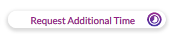

<!---------------------------------------------------------------------------------------->
<!--START HEADER-->
<div fxLayout="row">
  <div fxFlex.gt-lg="100" fxFlex.gt-md="100" fxFlex.gt-xs="100" fxFlex="100">
    <h2 mat-dialog-title class="primary_title">Report of the Day</h2>
  </div>
  <div fxFlex.gt-lg="10" fxFlex.gt-md="10" fxFlex.gt-xs="100" fxFlex="100" align="end">
    <mat-icon [mat-dialog-close]="true" style="cursor:pointer">close</mat-icon>
  </div>
</div>
<!--END HEADER-->
<!----------------------------------------------------------------------------------------->
<mat-dialog-content class="mat-typography">

  <table class="default">

    <tr>
      <td class="head">Service</td>
      <td class="head">Service ID</td>
      <!-- <td class="head">Time Remaining</td> -->
      <td class="head">Report Status</td>
    </tr>

    <tr style="height: 50px;" *ngFor="let item of data.data.reportSummaries">
      <td><b style="font-weight: 900; color: black;">{{item.service == '' ? 'Bundle' : item.service}}</b></td>
      <td>{{item.serviceId}}</td>
      <!-- <td>{{item.timeRemining}}</td> -->
      <td>{{item.saved}}</td>
    </tr>

  </table>
  <br>
  <b *ngIf="this.data.serviceLine == 2">
    <span style="color: red;">Remember!</span><br>
    If you need additional time for any service, use the request additional time button in the Activity Tab of the SR section
    <br>
    
  </b>
  <!-- <div class="page__section-button page__section-button--biggerx" *ngIf="__userlog__.role.id == 3 || __userlog__.role.id == 19">
    <button class="button-icon button-icon--time page__section-button--lineButtons--bigger">
      Request Additional Time
    </button>
  </div> -->
  <!-- <div style="color: #ff0000; margin-top: 20px; text-align: center;">

    <span style="font-size: 12px;">
      The Time of the service
      <h1 style="color: red; display: inline; font-size: 12px !important; font-weight: bold;">{{service_name}}</h1>
      with the Service ID
      <h1 style="color: red; display: inline; font-size: 12px !important; font-weight: bold;">{{service_id}}</h1>
      exceeds the Autho Time. <br> Negative time indicates that Request Additional Time is required.
    </span>

  </div> -->

</mat-dialog-content>
